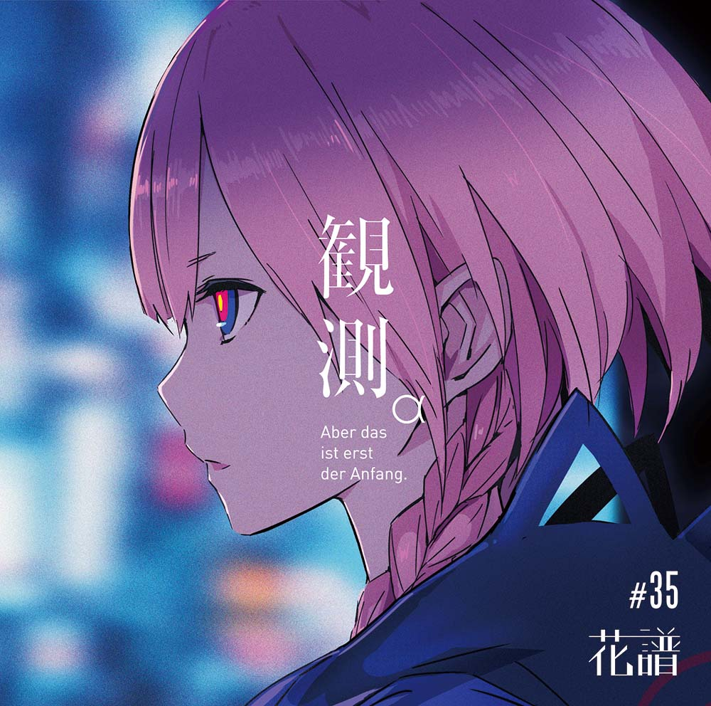
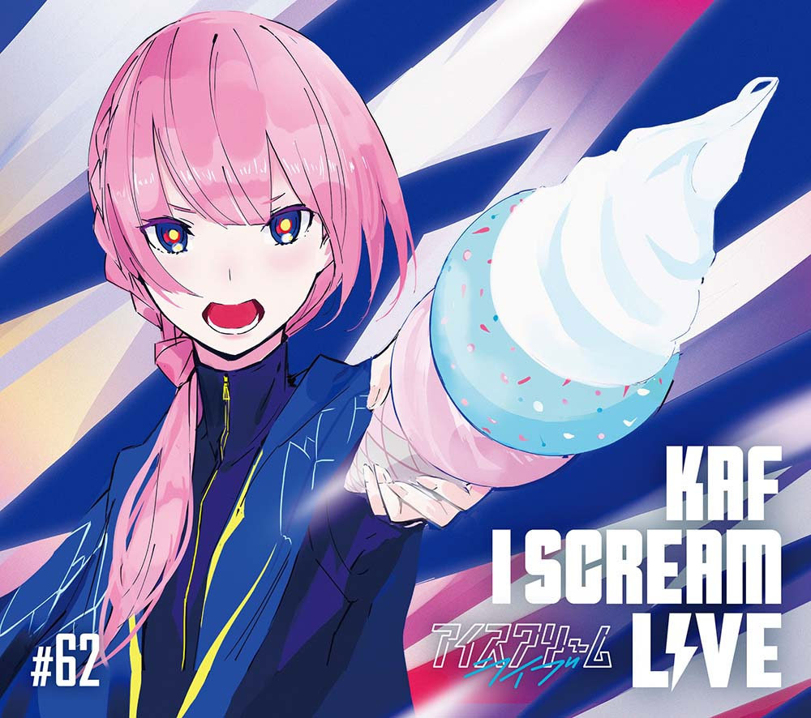
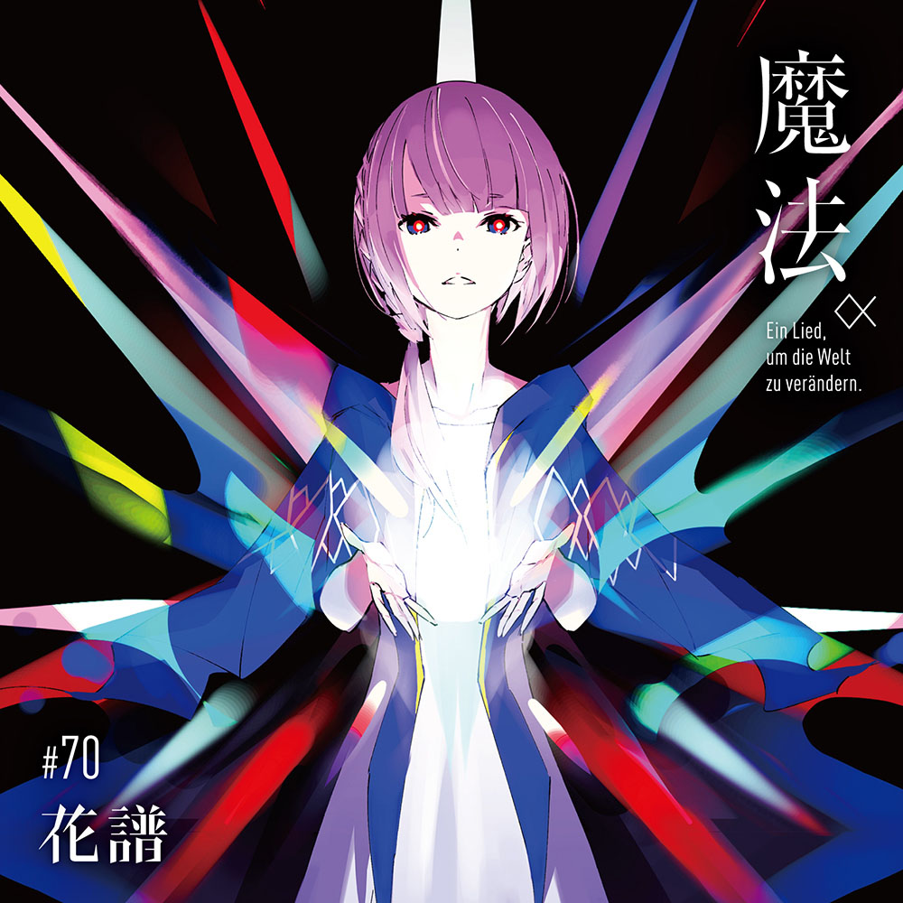

DISCOGRAPHY
観測α (Aber das ist erst der Anfang.)
観測β (Ich habe kein gutes Gefühl dabei.)

KTR-004/KTR-005 ￥5,000(税込)
- 01 確信 -Instrumental-
- 02 糸
- 03 忘れてしまえ
- 04 心臓と絡繰
- 05 quiz
- 06 Re:HEROINES
- 07 夜行バスにて
- 08 未確認少女進行形
- 09 過去を喰らう
- 10 エリカ
- 11 雛鳥
- 12 夜が降り止む前に
- 13 不可解
- 14 そして花になる
- 15 The end of prologue -Instrumental-
I SCREAM LIVE

KTR-016 ￥3,500（税込）
- 01 MC1
- 02 さよならミッドナイト
- 03 少女レイ
- 04 猛独が襲う
- 05 美しく、闇
- 06 MC2
- 07 回る空うさぎ
- 08 雨き声残響
- 09 イヤホンと蝉時雨
- 10 MC3
- 11 死んでしまったのだろうか
- 12 忘れたいことばっかだ
- 13 Lazy
- 14 MC4
- 15 五月雨
- 16 MC5
- 17 死神
- 18 ミッドナイト清純異性交遊
- 19 MC6
- 20 プラスティック・ラブ
- 21 ダンスが僕の恋人
- 22 宙ぶらりん
- 23 電話をするよ
- 24 MC7
- 25 明けない夜のリリィ
- 26 あなたの夜が明けるまで
- 27 MC8
- 28 MC9
- 29 Fall In Loveに恋してるっ♪
- 30 銀河
- 31 the MIRACLE
- 32 ビームが撃てたらいいのに
- 33 MC10
- 34 愛にできることはまだあるかい
- 35 おやすみ泣き声、さよなら歌姫
- 36 ロックンロールは鳴り止まないっ
- 37 今夜が終わらない
- 38 MC11
- 39 命に嫌われている
- 40 MC12
- 41 魔法 feat.理芽
- 42 MC13
- 43 空洞です
魔法α（Ein Lied, um die Welt zu verändern.）
魔法β（Wer schön sein will, muss leiden.）

KTR-019/KTR-020 ￥5,000(税込)
- 01 魔法の無い世界 -Instrumental-
- 02 危ノーマル
- 03 アンサー
- 04 私論理
- 05 戸惑いテレパシー
- 06 彷徨い
- 07 畢生よ
- 08 花女
- 09 メルの黄昏
- 10 痛みを
- 11 モンタージュ
- 12 景色
- 13 帰り路
- 14 まほう feat.理芽
- 15 世界線は分岐する -Instrumental-